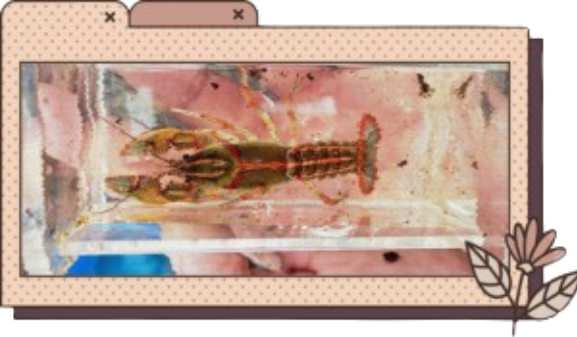
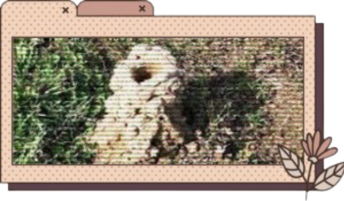
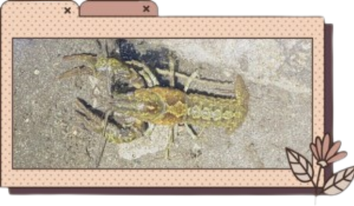
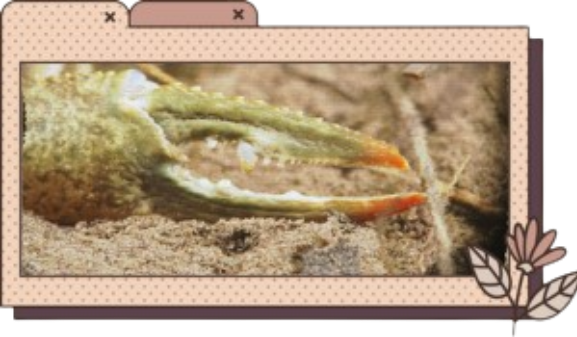
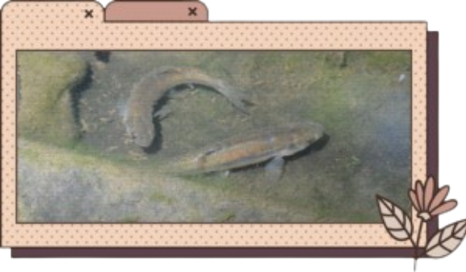
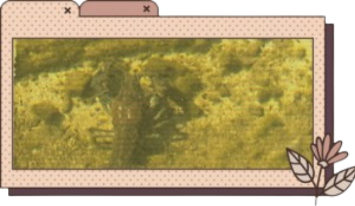
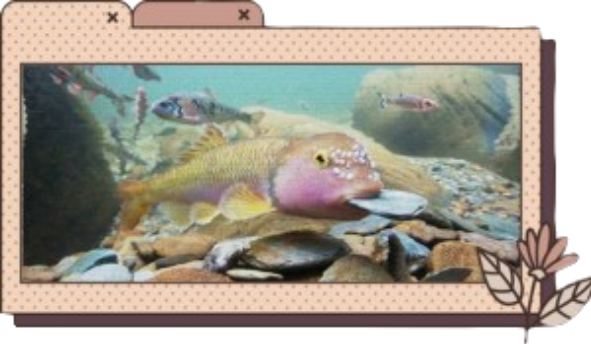
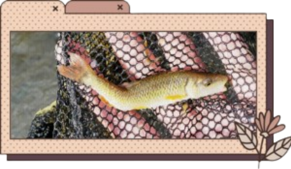
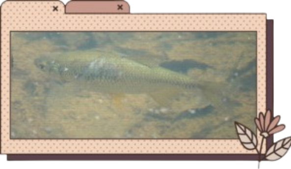

DIPNETTINGClick on the magnifying glasses to scoop through an area, move any debris from your net to see what
you found!
Click Anywhere to Scoop!
Click Anywhere to Scoop!
Click Anywhere to Scoop!
Move all the leaves to find what you caught!
Common Shiner - 30%
Northern Clearwater Crayfish - 20%
Golden Shiner - 10%
River Chub - 10%
Virile Crayfish - 10%
Central Stoneroller - 5%
Fathead Minnow - 5%
Big Water Crayfish - 5%
Calico Crayfish - 3%
Paintedhand Mudbug - 2%
Move all the leaves to find what you caught!
Longnose Dace - 20%
Western Blacknose Dace - 20%
Fantail Darter - 20%
Johnny Darter - 10%
Rainbow Darter - 10%
Iowa Darter - 5%
Greenside Darter - 5%
Common Logperch - 5%
Northern Pearl Dace - 3%
Redside Dace - 2%
Move all the leaves to find what you caught!
Stonecat - 21%
Tadpole Madtom - 15%
Blackstripe Topminnow - 15%
Slimey Sculpin - 15%
Central Mudminnow - 10%
Banded Killifish - 7%
Brook Stickleback - 7%
Brook Silverside - 5%
Mottled Sculpin - 3%
Brindled Madtom - 2%
Paintedhand Mudbug
Scientific Name: Lacunicambarus polychromatus
Description: A large greenish-brown crayfish with red claws
Range: southern ends of Michigan, Indiana, Ohio, Kentucky, Tennessee, Alabama, northern Florida,
Illinois, and southern Ontario.
Habitat: As a species of burrowing crayfish, they live in muddy lowlands, partially drained
wetlands, and ditched streams
Size: about 3¼-4 inches in length


Calico Crayfish
Scientific Name: Faxonius immunis
Description: Resembles other Faxonius Crayfish, such as the Virile Crayfish, differentiated by a
notch in the finger of it's claw
Range: Most of Eastern North America(Southern Canada and Northern America) and parts of Europe as
well(due to an indivual escaping the aquarium trade)
Habitat: slow-flowing bodies of water, such as streams, ponds, marshes and roadside ditches
Size: about 1.75 to 3.5 inches in length


Big Water Crayfish
Scientific Name: Cambarus robustus
Description: A large and robust crayfish that is ussually a brown color and lacks the spots or
colored claws that other crayfish(such as Virile and Calico Crayfish) have
Range: Southern Ontario and most of the american north east(New York, Michigan, etc)
Habitat: Fast moving rivers and lakes
Size: about 5-8 inches (Based on personal experiance as I can't find a length on google where it
only gives the carapace length which is 2 inches)
Personal Note: One of my absolute favorite Crayfish to catch because they are the biggest crayfish
in my area and look really cool, I even caught a pinkish colored one
Fathead Minnow
Scientific Name: Pimephales promelas
Description: dull olive-grey in appearance, with a dusky stripe extending along the back and side,
and a lighter belly. There is a dusky blotch midway on the dorsal fin
Range: across North America from Chihuahua, Mexico, north to the Maritime Provinces and Great Slave
Lake drainage of Canada
Habitat: In all sorts of freshwater habitats such as lakes, streams, and ponds. They have a
surprising tolerance for low oxygen water, meaning they can handle lower oxygen habitats as well,
such as wetlands
Size: about 2-3 inches in length
Fun Fact: The males during mating season grow fleshy stubs on their face called turbicles, which
they use to fight off other males

Central Stoneroller
Scientific Name: Campostoma anomalum
Description: Rounded snout overhanging a crescent-shaped mouth, a hard ridge of cartilage on the
lower lip, and irregular patches of dark colored scales on the sides of the body. Breeding males
have orange fins and grow turbacles, similar to other minnows
Range: A large portion of the eastern, central, and midwestern United States, along with some
isolated populations in Canada and Mexico
Habitat: Midwaters and bottoms of freshwater streams and rivers but it is a tolerant species which
means it can be found in almost any stream
Size: about 3-6.5 inches in length
Fun Fact: Their names comes from the way they build their nests, during late winter, the males will
begin using their noses to roll stones along the bottom of the river to build bowl-shaped nests in
calmer waters
Virile Crayfish
Scientific Name: Faxonius virilis
Description: As juviniles, they are mostly a brown color with spots on their carapace and spots that
go down their tail. Once they get older, their carapce turns a rusty-red color and they get their
distinctive blue claws
Range: It's native to the southern ontario and much of the north-eastern USA but it's invasive to
other parts of the USA and it's also invasive to Europe as well, where it is highly invasive
Habitat: lakes, streams, and wetlands
Size: about 3-6 inches in length(The biggest I've caught was about 6in but on average, the adults I
catch are about 4in)
Personal Note: Virile Crayfish are shockingly resiliant, as compared to the other native species in
my area, I can practically find them anywhere. For example, I recently visited a local, very urban
creek, and I thought that there's no way that any fish or aquatic life live there. I was proven
wrong when I spotted 2 crayfish in there, both of them being Virile Crayfish

River Chub
Scientific Name: Nocomis micropogon
Description: A robust minnow, dark olivaceous above to dusky yellow below, with orange-red fins,
large scales, a large slightly subterminal mouth, and a small barbel at the corners of it's jaws
Range: Most of the Great Lakes and Appalachian regions
Habitat: Clear, medium to large creeks and rivers with moderate to swift current
Size: about 5-13 inches in length(I was very surprised when I went to google and learned they can
get to 13 inches long as most of the ones I've caught are are 5-7 inches in length but that seems to
be a rare occurance)
Personal Note: River Chubs, just like other Minnows, the males go undergrow a transformation during
the spring to get ready for breeding and just like the Stonerollers, these males build nests. They
build these nests by litterally picking the stones up with their mouths, which I find very cool. I
haven't caught any breeding males before but I really do hope I do soon. Unrelated, I did catch one
with
scoliosis


Golden Shiner
Scientific Name: Notemigonus crysoleucas
Description: The back is dark green or olive, and the belly is a silvery or brassy white. The
sides are silver in smaller individuals, and in clear or turbid water, but golden in larger
ones living in stained water.
Range: Throughout the eastern half of North America
Habitat: They perfer quiet waters and are therefore found in lakes, ponds, sloughs, and ditches
Size: about 2.8-14.4 inches in length(14.4in seems to be a very uncommon max but in the wild and on
average, they seem to hit 2.8-7.9 inches)
Fun Fact: It is the sole member of its genus

Northern Clearwater Crayfish
Scientific Name: Faxonius propinquus
Description: A small crayfish that is ussually a dark to light brown color, a noticable feature of
it are it's orange tipped claws and a triangular stripe/marking that runs down the tail, which is
unlike the Virile Crayfish which has spots instead(This is the usual but I have caught one that was
a bluish-grey color)
Range: Southern Ontario, Quebec(St.Lawerence area), and North-Eastern States such as New York and
Ohio
Habitat: Clear, rocky-bottomed streams, rivers, and lakes
Size: about 2-4 inches in length(The ones I ussually catch seem to be around the 3 inch range,
they're a lot smaller compared to Virile Crayfish and Big Water Crayfish)
Personal Note: This was the very first species of crayfish that I caught and it really got me into
dipnetting
Common Shiner
Scientific Name: Luxilus cornutus
Description: Silvery colored (sometimes bronze) and has an olive back with a dark dorsal stripe
Range: Found all across North America
Habitat: Rocky pools in small to medium rivers
Size: about 4-6 inches in length(The ones I catch tend to be smaller than that, being about 2-3
inches)
Personal Note: The ones I catch are ussually pretty small and they are a very boring looking fish,
it is pretty much the default fish. One cool thing is the time I saw a ton of them school, it really
is a sight to behold